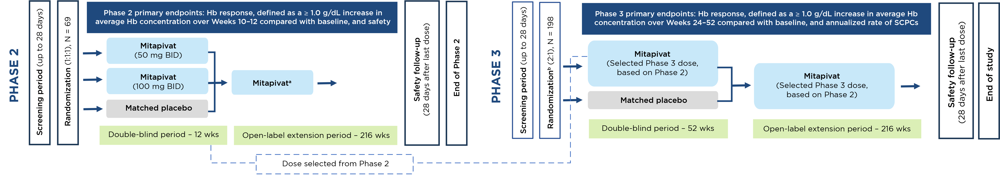

Sickle Cell Disease Phase 2/3 Study Design
STATUS: INITIATING
A phase 2/3, double-blind, randomized, placebo-controlled, multicenter study evaluating the safety and efficacy of mitapivat in patients with sickle cell disease (SCD)

Key Inclusion Criteria
- ≥ 16 years of age; subjects who are 16 or 17 years of age must be documented Tanner Stage 5
- Documented SCD (HbSS, HbSC, HbSβ0/HbSβ+ thalassemia, other SCD variants)
- Recurrent vaso-occlusive crises (VOCs) – defined as the occurrence of 2–10 sickle cell pain crises (SCPCs; acute pain needing medical contact, acute chest syndrome, priapism, hepatic or splenic sequestration) in the prior 12 months
- Anemia – defined as a Hb level of 5.5–10.5 g/dL
- If taking hydroxyurea (HU), the dose must be stable for ≥ 90 days before starting study drug
Key Exclusion Criteria
- Receiving regularly scheduled red blood cell transfusions
- Severe kidney disease or hepatobiliary disorders
- Currently receiving treatment with SCD therapies (excluding HU)
- Prior exposure to gene therapy, or prior bone marrow or stem cell transplantation